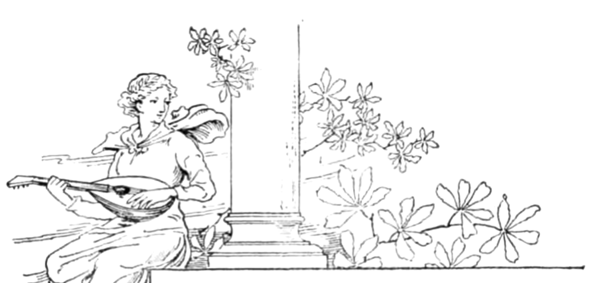
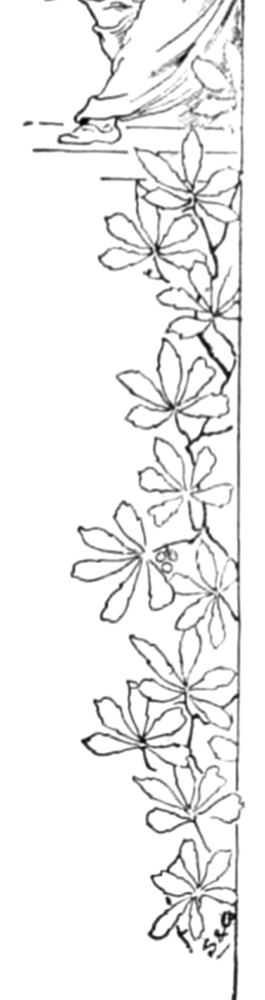
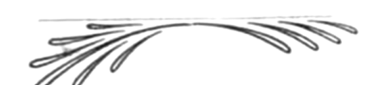

Life presented itself to the Greek mind as a series of manifestations of Power Omnipotent, irresistible, irrevocable, first in the order of forces, loomed Fate, then the gods, the ancestral heroes, and the pre-eminent men of the times. Each State, surrounded by enemies, depended for its safety on the courage and power of its citizens, whom a reverse of war would convert into slaves with their wives and children. The actual experience of the Power and Tragedy of human existence, which to our modern comfortable plebian semi-vegetable life are almost unintelligible, lent an intensity to the moment which we can but faintly imagine. Power and its limitation were equally displayed in the sudden plunge from the height of prosperity to the depth of woe, and found expression in the never equalled strength and restraint of Greek art, imparting a reverential solemnity even to its most joyous utterances. This is the key note of their art, energetic power, and fate:
In the following ode from Goethe’s masterpiece, these qualities are passionately felt by one who was himself a Greek at heart though born in a barbarian age. The music is an endeavour to complete and enforce the poet’s intention. The serenity, not untinged with a certain noble sadness, of the first stanza, is contrasted with those following, in which the power and majesty and terrible presence of the gods is imaged, to which succeeds the picture of limited fettered humanity.